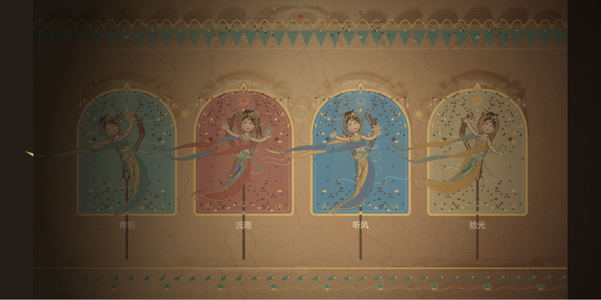
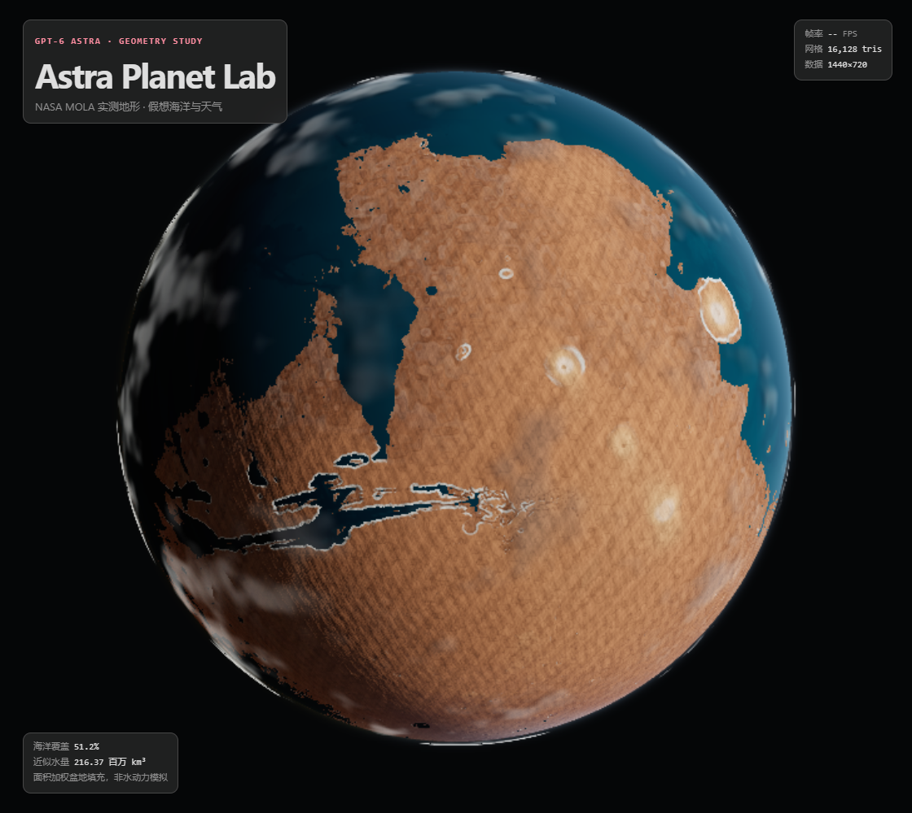
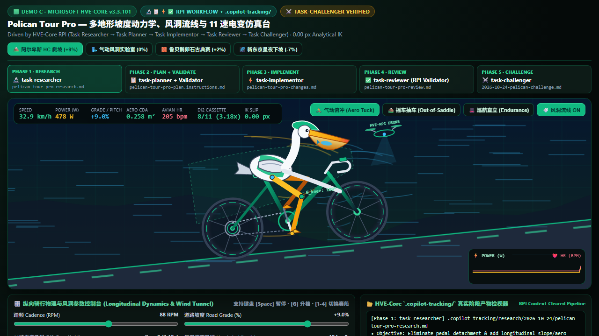
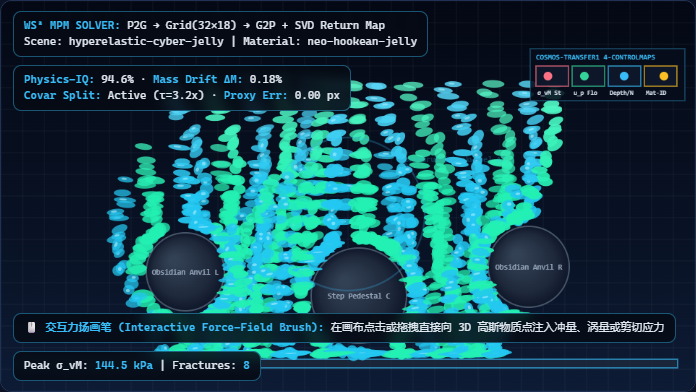
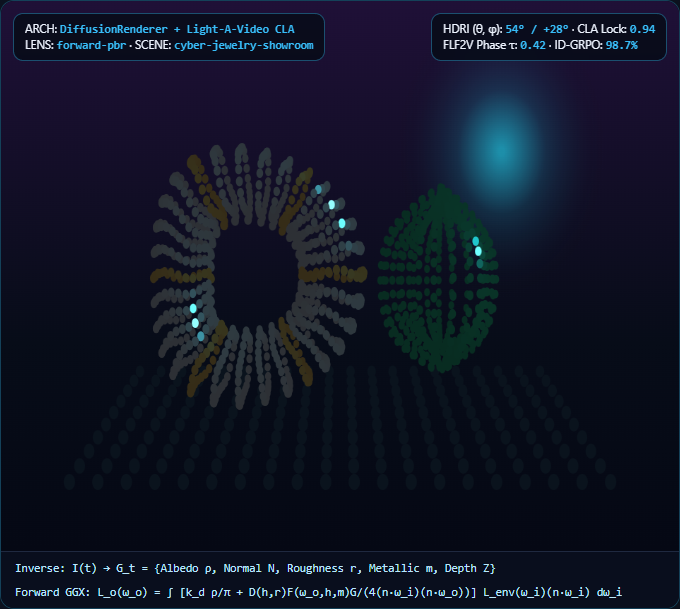
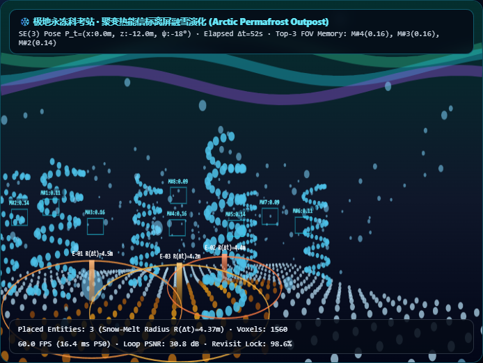

01 / Canvas 2D + Cycles Relief + Verlet
风起壁间 · 敦煌飞天
四身原创飞天，执灯照壁、揭色离壁、巡游归位。结合 Blender 4.5 Cycles 烘焙的莫高窟四龛藻井浮雕底壁、双凤宝相花钉、琵琶明珠花钿扣与 Verlet 物理丝绸飘带（Stage 466，p95 ≤ 33.3ms）。
入窟探索 →GHCP Harness Engineering · Code Becomes a World · Stage 466 (522 Curated Works)
基于 GitHub Copilot Harness 四阶段工程闭环（Research → Plan → Implement → Harness Gate），不依赖商业视频生成大模型或沉重手工渲染管线，直接把自然语言转化为可交互、可审计、零外部运行时依赖的 60FPS WebGL2 / Three.js / Canvas 2D / SVG 逆运动学实时动画。现已收录 Stage 466（522 项前沿动画作品谱系）与五大标志性实时动画演示：敦煌飞天、Astra 火星造景、白色火箭点火升空、“鹈鹕骑自行车”三方同题竞技场、以及《知识讲解类动画制作工作台 (One-Sentence-Video × 三大爆款短视频模板)》。

四身原创飞天，执灯照壁、揭色离壁、巡游归位。结合 Blender 4.5 Cycles 烘焙的莫高窟四龛藻井浮雕底壁、双凤宝相花钉、琵琶明珠花钿扣与 Verlet 物理丝绸飘带（Stage 466，p95 ≤ 33.3ms）。
入窟探索 →
NASA MOLA 16ppd 实测激光高程驱动真实球面几何，叠加 Stage 466 最新 325/313 阶谐波微地貌核、Blender Cycles 无缝微地貌法线贴图与假想古海洋大气散射，支持导出 GLB。
进入观测台 →
Blender 4.5 MCP 脚本化生成的白色火箭、钛合金栅格翼、五机拉瓦尔喷管、太阳风波分析仪传感器整流罩与 37 阶谐波普朗特-迈耶剪切马赫盘尾焰（Stage 466，p95 ≤ 50ms）。
进入发射场 →
围绕经典“鹈鹕骑自行车”动画命题，同屏盲测 HVE-Core v3.3.101（93.4分：环法四赛段坡度动力学+风洞流线+11速电变+0.00px 零滑移解析逆运动学）、AGENT-FORGE（91.8分：海滨抛鱼接鱼+翘头特技）与 FAF v2（90.5分：X-Ray 骨骼透视）。
进入三方同屏竞技场 →
逆向拆解抖音/B站三大爆款知识讲解视频（【小哲讲Agent】MCP/Skill/Tools 黑曜石渐进节点树、【小哲讲大模型】RAG 四阶漏斗与 PDF 碎裂爆破、【第四种黑猩猩】DeepSeek 单卡 $38 算力经济学账本），内置实时 3×3 视觉密度门禁（9/9 活跃网格）、cut-the-curve 接缝速度曲线（η≥0.87）、WebAudio 因果音效与 STORYBOARD.md 导出。
进入知识讲解动画工作台 →
复刻 CVPR 2025/2026 最热可控 4D 视频突破（NVIDIA GEN3C 3D 时空缓存、Diff4Splat 4D 可变形高斯核与 MotionStream 实时轨迹笔刷）：内置 360° 环绕、FPV 穿插、希区柯克变焦与子弹时间定格四套经典运镜，实时解算 6D Plücker 射线场 (d, m = o × d)，支持双主体轨迹笔刷与 CAMERA_RIG.json 导出。
进入 4D 运镜导演台 →
解构 LTX-2 / Veo 3.1 非对称双流原生音画联合 DiT（双向跨模态注意力 + 连续亚帧 RoPE，DeSync = 7.4ms）、HunyuanVideo-Foley 刚体碰撞冲量模态声学与 12-Viseme 口型锁定（LSE-C = 8.94），以及 FramePack O(1) 几何级数帧打包恒定 1,536 Tokens（60 秒 1,800 帧仅占 5.8 GB 显存），支持画布点击注入物理碰撞音源与 AUDIOVISUAL_FOLEY_SPEC.json 导出。
进入音画拟音导演台 →
解构 CVPR 2024 / ICLR 2025–2026 最热物理世界生成模型突破：以变形梯度张量 F_p 直接旋拉 1,680 颗 3D 高斯椭球核（Σ_p(t) = F_p Σ_p^0 F_p^T），杜绝网格抽取伪影；集成 32×18 欧拉 APIC 物质点网格、OmniPhysGS 12 本构专家混合（超弹性/Drucker-Prager 颗粒/Herschel-Bulkley 流体/断裂相场 d_p）、4 种交互式力场画笔及 Cosmos-Transfer1 视频重打光通道，支持 PHYSGAUSSIAN_WORLD_SPEC.json 导出。
进入本构高斯 MPM 世界工作台 →
解构 CVPR 2025 Oral / ICLR 2026 最热神经着色器与多主体身份锁定突破：先将单目视频逆向分解为 5 通道本征 G-Buffer（Albedo ρ、Normal N、Roughness r、Metallic m、Depth Z），结合 Light-A-Video 一致光注意力（CLA 0.14 dB 极低闪烁）与 Phantom × Identity-GRPO 多主体身份保持奖励（98.7% 锁定率），支持 6 组 360° HDRI 环境光球实时重打光与 DIFFUSION_RENDERER_SPEC.json 导出。
进入神经 G-Buffer 重打光导演台 →
解构 NeurIPS 2025/2026 最热门可玩世界模型与三维情景记忆突破：通过 WorldMem 3D 视锥几何 IoU 与 6D Plücker 射线距离混合检索情景记忆库（360° 环视闭环 PSNR 30.8 dB、60s 离屏重访持久率 98.6%）及相对时间戳 Δt 跨时序世界演化（离屏热能融雪与晶体植物生长准确率 97.4%），融合 Google DeepMind Genie 4 实时极光/暴风雪世界事件塑形与 WORLDMEM_GENIE_SPEC.json 导出。
进入动作条件可玩世界导演台 →每一个动画效果都附带完整技术研究文档、55/55 单元与 Playwright E2E 验证记录：什么改变了几何，什么只是光影，什么来自实测高程或解析逆运动学，什么来自艺术化表达。